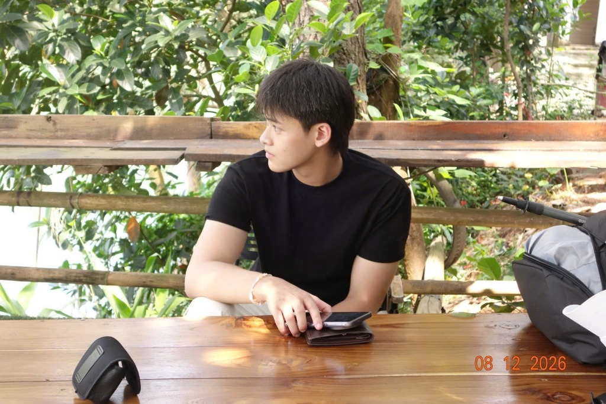
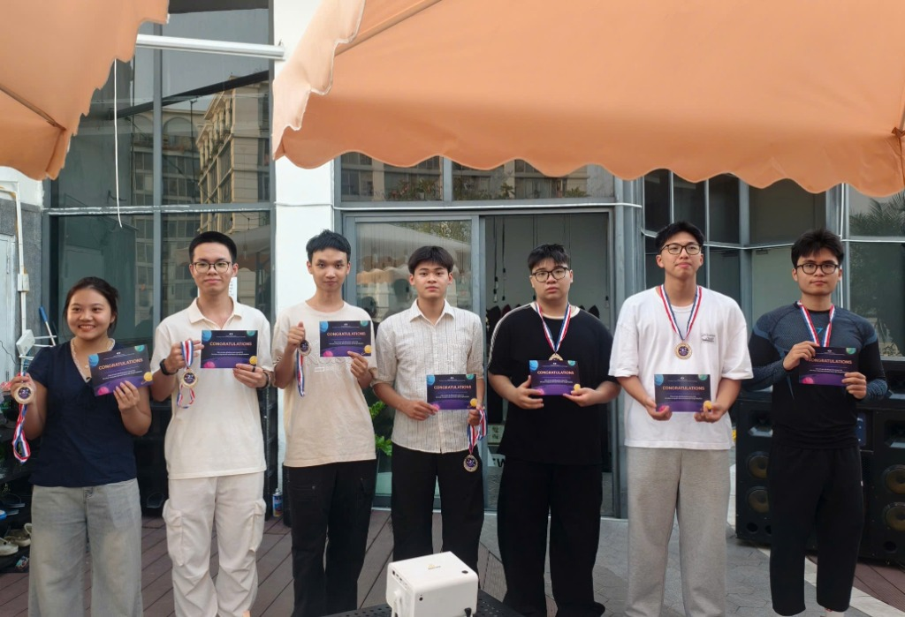

Quang Hiếu
Data Engineering · Medallion Lakehouse · Distributed Systems
I Build, Scale & Architect.
I'm a Data Engineer passionate about building reliable, high-throughput data backbones. My focus is treating data pipelines like production software with strict schema contracts, idempotent operations, and modern lakehouse architectures using PySpark, dbt, FastAPI, and Docker.
Experience
2 Roles ListedData Engineer Intern
InternshipParticipated in data engineering workflows: designing scalable ETL/ELT data pipelines, containerizing services with Docker, tuning SQL queries on PostgreSQL, and maintaining reliable automated task schedulers for business analytics.
Tech Member & Hackathon Team Lead
Community & LeadershipParticipated in technical workshops and community sharing. Led a team of 7 developers in an internal mini-hackathon, developing the project NutriBudget (macro calculator, budget constraint solver, smart meal planner) and successfully winning 2nd Prize 🥈.
Highlights & Community
Mini-Hackathon 2nd Prize showcase & team leadership

Google ADK NutriBudget
Led a high-velocity 7-person development team during the internal GDGoC Hackathon. Designed the end-to-end architecture solving dietary optimization under financial constraints: calculating macros, accepting user wallet budgets, and generating optimized meal plans using linear programming.
Featured Projects
Production-grade data pipelines, lakehouse architectures, and systems
Google ADK NutriBudget
Intelligent nutrition-budget optimization system. Calculates macro targets, processes budgetary constraints, and leverages PuLP linear programming to output meal plans.
Enterprise Medallion Lakehouse
End-to-end lakehouse implementation ingesting high-volume transactional data through Bronze (raw), Silver (cleansed/deduplicated), and Gold (dimensional marts) with ACID guarantees.
Crypto Stream Analytics Engine
Real-time market streaming pipeline ingesting live ticker data into Redis streams, computing sliding-window volume weighted averages, and sinking to DuckDB for instant analytical queries.
Multi-Agent Research Pipeline
Asynchronous distributed web crawler and unstructured document processing pipeline that parses, cleanses, embeds, and indexes articles into MongoDB for semantic synthesis.
Tech Stack & Tools
Core technologies and daily driver tooling
Education & Interests
Bachelor of Information Technology
Posts and Telecommunications Institute of Technology (PTIT)
Data Engineering Professional Course
Production ETL pipelines, dimensional modeling, Apache Airflow, and PySpark processing.
Hardware & Workspace
Heavy compute rigs, mobile workstations, and developer environment
Custom PC Workstation
Local Spark clusters, multi-service Docker stacks, GPU testing & ETL batch processing.
Apple MacBook Pro 14"
Primary architecture design, code reviews, distributed modeling, and mobile engineering.
Lenovo Xiaoxin Pro 14 GT
Linux WSL testing sandbox, x86 binary validation, and clean ergonomic peripherals.
Ready to build reliable data pipelines together?
I am currently open for Data Engineer positions, data infrastructure discussions, and technical collaborations. Feel free to reach out via email or LinkedIn.